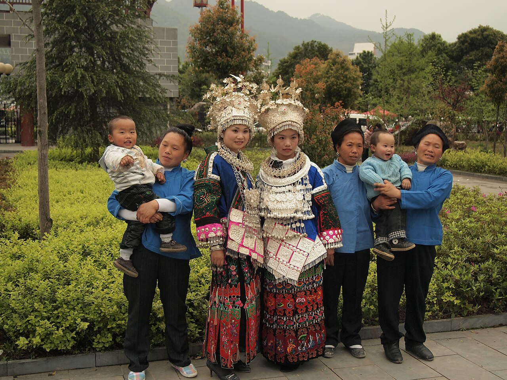
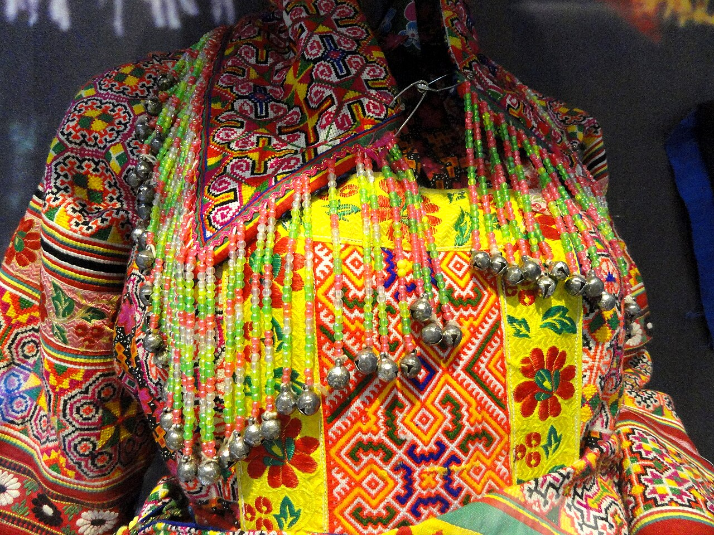

头饰
包头、发髻、银冠与银簪等因地域、年龄和场合而异。节庆银冠常以花、鸟、蝶等形象形成向上的轮廓。
CHAPTER 01
苗族服饰没有单一的固定样式。不同地区与支系，在衣裙长短、头饰、色彩及工艺上形成了丰富面貌。

史料中的服饰线索
服饰持续随社会生活而变化。现有文献和实物，为我们理解苗族服饰的发展提供了不同角度。
古代文献常以“五色衣裳”等描述南方族群的服饰面貌。色彩鲜明的织绣传统，在长期生活实践中不断发展。
中国非物质文化遗产网的资料提到，唐宋文献中已出现苗族佩戴银钏、银饰的记述，说明银饰使用历史悠久。
随着纺织、染色、刺绣和金属工艺积累，各地形成更具辨识度的衣裙结构、纹样体系与银饰组合。
博物馆收藏、影像记录与田野调查保存了不同地域的服饰实物，也让更多人看到苗族服饰内部的多样性。
苗绣、苗族银饰制作技艺等项目进入国家级非物质文化遗产名录，传统技艺在教学、节庆和当代设计中继续生长。

将鼠标移到服饰图像并点击不同区域，可跳转至对应形制说明
点击图像热点 · 认识服饰结构
包头、发髻、银冠与银簪等因地域、年龄和场合而异。节庆银冠常以花、鸟、蝶等形象形成向上的轮廓。
常见对襟、斜襟等结构，领口、肩部、袖口与衣襟是刺绣集中出现的位置。靛蓝底色能衬托彩色丝线与银片。
百褶裙的长短和装饰带各不相同。围腰既有实用功能，也是展示织、染、绣工艺的重要区域。
形制观察
便于劳动与行走，装饰相对克制。耐穿的布料、适合本地气候的结构与实用的包头方式，构成生活中的服饰。
集中使用刺绣、织锦、蜡染和银饰，在婚礼、节日等重要场合出现。它既展示手艺，也连接家庭记忆与共同体身份。